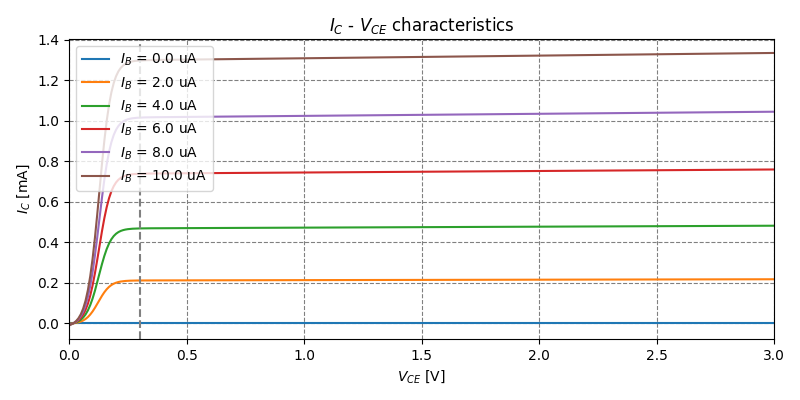
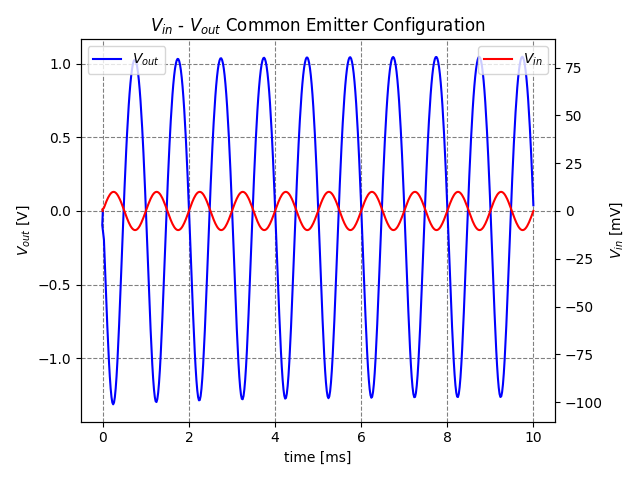
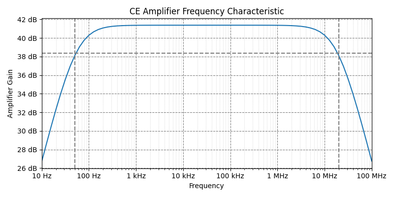
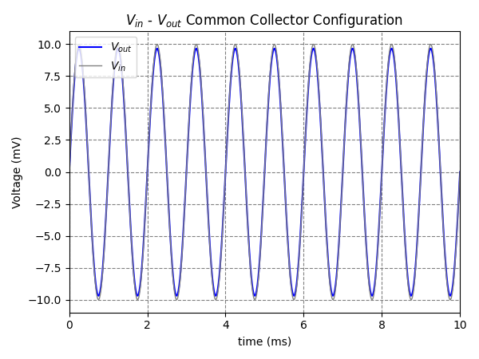
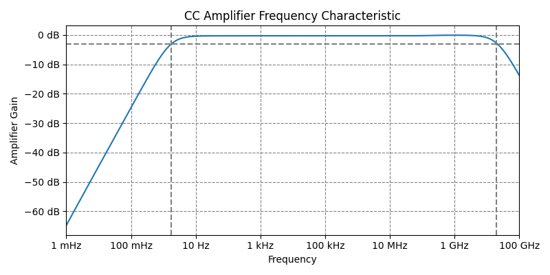
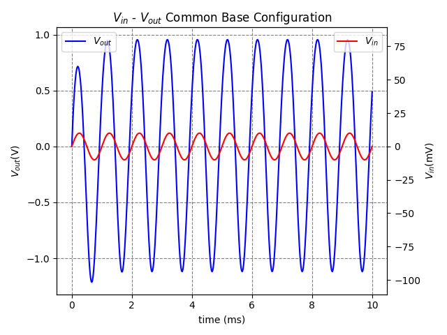
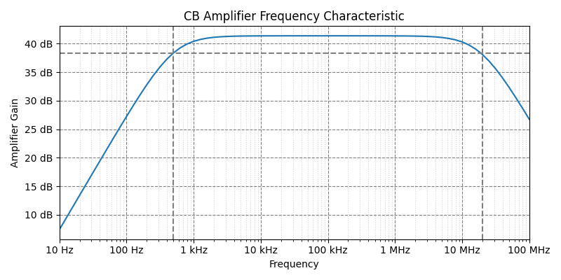
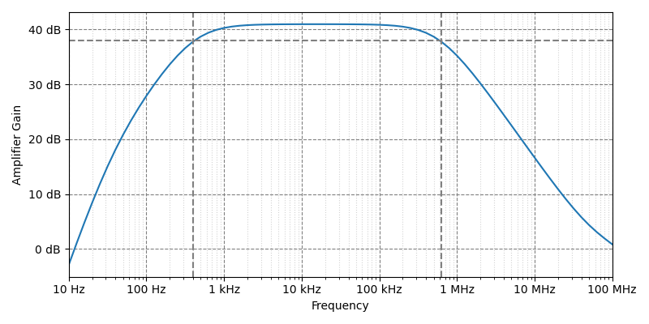
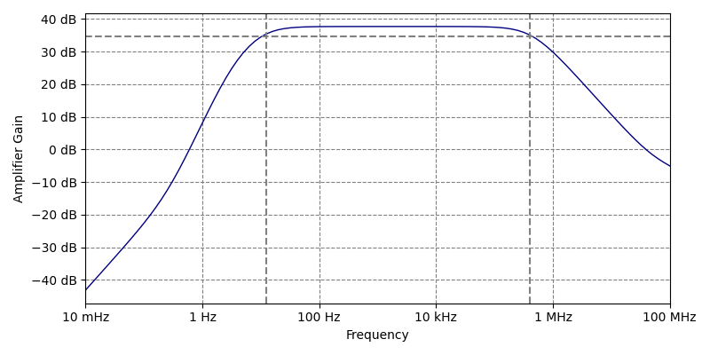

How it works
Every experiment follows the same pipeline: design and simulate the circuit in LTspice, parse the raw waveform data in Python, then compute and plot the results.
ltspice parser)→
NumPy analysis→
Matplotlib figure
Lab 1 · BJT Characterization
A DC sweep of the transistor: VCE from 0 to 3 V, with the base current stepped from 0 to 10 µA in 2 µA steps. A second script fits the active region of each curve (VCE > 0.4 V) and extends it back to the VCE axis, which it crosses at −98.65 V.
Early voltage: 98.65 V
Lab 1 · Single-Stage Amplifiers
The same transistor built into the three classic single-stage topologies — Common Emitter, Common Collector, and Common Base. Each one is run twice: a transient sweep driven by a 10 mV, 1 kHz sine (Vin vs Vout), and an AC sweep plotted as output magnitude in dB for a 1 V AC source, with the −3 dB cursors drawn on the plot.
| Configuration | Midband | Lower −3 dB | Upper −3 dB | Output phase |
|---|---|---|---|---|
| Common Emitter | ≈41 dB | ≈60 Hz | ≈20 MHz | inverted |
| Common Collector | ≈0 dB (0.97 V/V) | 1.8 Hz | 21 GHz | in phase |
| Common Base | 41.4 dB | 500 Hz | 18.8 MHz | in phase |
The AC sweeps do not all cover the same span: CE and CB run 10 Hz–100 MHz, CC runs 1 mHz–100 GHz. All three drive RL = 100 MΩ from a source with no series resistance.






Lab 2 · Coupling Comparison
Two two-stage amplifiers, built with different inter-stage connections and
swept with .ac over 10 Hz–100 MHz (capacitor) and
10 mHz–100 MHz (direct). Both keep 10 µF input and output coupling
capacitors and an emitter bypass capacitor, so both roll off at the low end.
| Build | Stages | Inter-stage link | Measured |
|---|---|---|---|
| Capacitor coupling | 2SC458 → 2SC458, both common emitter | 0.1 µF series capacitor | 41.0 dB midband; −3 dB at 416 Hz and 599 kHz |
| Direct coupling | 2SC458 (NPN) → 2SA1015 (PNP) | collector wired straight to the next base | 37.7 dB midband; −3 dB at 10.5 Hz and 438 kHz |

